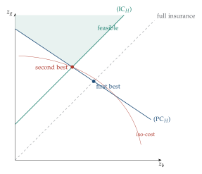

3.4. The second best: hidden actions#
Now the action is not contractible. The principal can tell the agent which action she would like, but she cannot enforce it. The only tool she has is the wage schedule, and the only thing it can depend on is output. The agent will take the recommended action only if, given the wage schedule, it is in his own interest.
What changes. In the language of the two-stage method, Stage 1 acquires a new constraint. Before, the cheapest way to implement an action only had to persuade the agent to accept. Now it must also persuade him to act. We first work out what that new constraint says (Lemma 3.2), then show that the first-best contract violates it (Lemma 3.3), and then find the cheapest contract that satisfies it (Theorem 3.2).
What should we expect? The first-best high-action contract was a flat wage. A flat wage gives the agent no reason to work, since he is paid the same whatever he does. So to get effort, pay must depend on output. But then the agent bears risk, and he must be compensated for it. We should therefore expect a contract that is less than full insurance and costs the principal more than the first best.
3.4.1. The incentive constraint#
Lemma 3.2 (Incentive compatibility)
Under contract \((z_g,z_b)\) the agent weakly prefers the high action to the low action if and only if
He weakly prefers the low action if and only if \(z_g-z_b\le c/\Dpi\).
Proof of Lemma 3.2
The high action is weakly preferred if and only if \(\muh z_g+(1-\muh)z_b-c\;\ge\;\mul z_g+(1-\mul)z_b\). Collecting terms, \((\muh-\mul)z_g-(\muh-\mul)z_b\ge c\), i.e. \(\Dpi(z_g-z_b)\ge c\). Divide by \(\Dpi>0\).
Reading the constraint. Working harder raises the probability of the good outcome by \(\Dpi\). Each extra unit of probability is worth \(z_g-z_b\) to the agent. So effort pays if \(\Dpi\times(z_g-z_b)\) covers its cost \(c\). The required gap \(c/\Dpi\) is large when effort is costly and when output is a poor signal of effort (small \(\Dpi\)).
Lemma 3.3 (Full insurance kills incentives)
When the action is hidden, the first-best high-action contract \(z_g=z_b=\uo+c\) is not incentive compatible: the agent strictly prefers the low action.
Proof of Lemma 3.3
Under full insurance \(z_g-z_b=0<c/\Dpi\), so (IC) fails. Directly: with a flat wage the agent’s utility from money is the same whatever he does, so he saves the cost \(c\).
3.4.2. The optimal contracts#
Theorem 3.2 (Optimal contracts under hidden action)
Suppose the action is hidden and Assumption 3.1, Assumption 3.2, Assumption 3.3 hold.
(a) High action. The cheapest contract that induces \(\ah\) is the partial-insurance contract
(3.3)#\[ z_g^* = \uo+(1-\mul)\frac{c}{\Dpi},\qquad z_b^* = \uo-\mul\frac{c}{\Dpi}. \]Both (PC) and (IC) bind: the agent gets exactly \(\uo\) and is indifferent between the two actions.
(b) Low action. The cheapest contract that induces \(\al\) is full insurance at \(z_g=z_b=\uo\), exactly as in the first best. (PC) binds and the agent strictly prefers the low action.
(c) Choice of action. Let \(C^{\SB}\coloneqq\muh\,h(z_g^*)+(1-\muh)\,h(z_b^*)\) be the expected wage bill in (a). The principal induces the high action if and only if
(3.4)#\[ \Dpi\,\Dy\;\ge\;C^{\SB}-h(\uo). \]
Proof strategy (Theorem 3.2(a))
The principal minimises \(\muh h(z_g)+(1-\muh)h(z_b)\) subject to two linear constraints, (PC) and (IC). We show that both bind; two linear equations in two unknowns then pin down the contract.
Step 1: (PC) binds, by the same perturbation as in Theorem 3.1: shifting both utilities down by the same amount leaves the difference \(z_g-z_b\), and hence (IC), untouched.
Step 2: (IC) binds. The cleanest route is a change of variables. Describe a contract by its mean utility \(m\) and its spread \(d=z_g-z_b\). (PC) is a constraint on \(m\) only; (IC) is a constraint on \(d\) only; and for fixed \(m\) the cost is increasing in \(d\) by Jensen. So the principal wants the smallest spread (IC) allows.
Step 3: solve the two binding constraints.
Proof of Theorem 3.2
(a) The principal solves
Step 1: (PC\(_H\)) binds. Suppose \((z_g,z_b)\) is optimal with slack \(s\coloneqq\muh z_g+(1-\muh)z_b-c-\uo>0\). The contract \(\tilde z_i=z_i-s\) satisfies (PC\(_H\)) with equality, and \(\tilde z_g-\tilde z_b=z_g-z_b\ge c/\Dpi\), so (IC\(_H\)) still holds.
Why this step?
A parallel shift moves the mean but not the spread, and (IC) only cares about the spread.
Because \(h\) is strictly increasing the new contract is strictly cheaper, contradicting optimality.
Step 2: (IC\(_H\)) binds. Change variables to the mean and spread under the high action,
whose inverse is
Why this step?
Check: \(\muh[m+(1-\muh)d]+(1-\muh)[m-\muh d]=m\), and the difference is \(d\). The map is linear and invertible, so optimising over \((m,d)\) is the same as optimising over \((z_g,z_b)\).
In the new variables the problem is
The constraints have separated: one restricts \(m\), the other restricts \(d\). We show that for any fixed \(m\), \(C(m,\cdot)\) is strictly increasing on \([0,\infty)\).
\(C(m,\cdot)\) is strictly convex in \(d\): it is a positive combination of the strictly convex \(h\) composed with affine functions of \(d\) that are not constant.
\(C(m,d)\ge C(m,0)\) for every \(d\), with strict inequality when \(d\ne 0\). This is Jensen again: the lottery (3.5) has mean \(m\), so \(C(m,d)\ge h(m)=C(m,0)\), strictly if \(d\neq 0\).
A strictly convex function whose minimum is at \(0\) is strictly increasing on \([0,\infty)\). Take \(0\le d_1<d_2\). If \(d_1=0\), \(C(m,0)<C(m,d_2)\) by the previous point. If \(d_1>0\), write \(d_1=t\cdot 0+(1-t)d_2\) with \(t=1-d_1/d_2\in(0,1)\). Then
\[ C(m,d_1)<t\,C(m,0)+(1-t)\,C(m,d_2)\le C(m,d_2). \]
Why this step?
This is the formal version of “a riskier contract is costlier”. Holding the agent’s expected utility fixed, every extra unit of spread raises the expected wage bill. The principal therefore uses only as much spread as incentives require.
Hence at the optimum \(d=c/\Dpi\), i.e. (IC\(_H\)) binds. (By Step 1, \(m=\uo+c\).)
Step 3: solve. Substituting \(m=\uo+c\) and \(d=c/\Dpi\) into (3.5),
Since \(c=\Dpi\cdot c/\Dpi=(\muh-\mul)\,c/\Dpi\),
By the tie-breaking rule the agent accepts and takes \(\ah\).
(b) The principal solves
Why this step?
This is relaxation (T3). Drop the incentive constraint. The relaxed problem is exactly the first-best low-action problem, whose unique solution is full insurance at \(\uo\) (Theorem 3.1).
Full insurance has \(z_g-z_b=0<c/\Dpi\), so it satisfies the dropped constraint. A point that is optimal for the relaxed problem and feasible for the original one is optimal for the original one. Since the inequality \(0<c/\Dpi\) is strict, the agent strictly prefers \(\al\).
(c) Profit from (a) is \(\muh y_g+(1-\muh)y_b-C^{\SB}\) and from (b) is \(\mul y_g+(1-\mul)y_b-h(\uo)\). Subtracting gives (3.4).
Remark 3.2 (The slides’ proof of Step 2)
The lecture slides prove that (IC\(_H\)) binds with a different perturbation: lower \(z_g\) by \(\varepsilon\) and raise \(z_b\) by \(\varepsilon\muh/(1-\muh)\). That perturbation keeps mean utility fixed and reduces the spread by \(\varepsilon/(1-\muh)\), so in our coordinates it is a move to the left along the \(d\)-axis at fixed \(m\). Both proofs rest on the same fact, that cost is increasing in spread; the change of variables just makes the fact visible.


Fig. 3.1 Contracts in utility space. (PC\(_H\)) has slope \(-(1-\muh)/\muh\); (IC\(_H\)) is parallel to the \(45^\circ\) line, \(c/\Dpi\) above it. Without (IC\(_H\)) the cheapest point on (PC\(_H\)) is on the full-insurance line. With it, the cheapest feasible point is the corner where both constraints bind.#
3.4.3. Reading the contract: carrot and stick#
Relative to the first-best wage \(h(\uo)\) that the agent would receive for the low action, the second-best contract
rewards the good outcome: \(z_g^*=\uo+(1-\mul)c/\Dpi>\uo\);
punishes the bad outcome: \(z_b^*=\uo-\mul c/\Dpi<\uo\).
The agent cannot be paid for effort directly, so he is paid for the evidence of effort. Taking the high action makes the reward more likely and the punishment less likely, and the contract is calibrated so that the gain exactly covers the cost:
Common mistake
In the first identity the weight on \(z_b^*\) is \(1-\muh\), not \(\mul\). The two weights must add up to one.
Risk sharing. The price of incentives is risk. Output varies by \(\Dy\); with the second-best contract the principal’s profit varies by \(\Dy-(w_g^*-w_b^*)\) and the agent’s wage by \(w_g^*-w_b^*>0\). Some risk has moved from the risk-neutral party to the risk-averse one, which is exactly what efficient risk sharing says should never happen. That is the source of the welfare loss in the next section.
3.4.4. Interpreting the second-best contract#
Theorem 3.2 is short, but there is a lot of economics packed into it. This subsection unpacks it.
1. The contract is designed around the shirker. Write the reward and the punishment relative to the outside option:
Both are scaled by the low-action probability \(\mul\), not the high-action one. Why? Because both constraints bind, the contract is pinned down by two facts: a diligent agent gets \(\uo+c\) in expected utility, and a shirking agent gets exactly \(\uo\). The second fact is what determines the split between reward and punishment: a shirker earns the reward with probability \(\mul\) and the punishment with probability \(1-\mul\), and these must balance so that he ends up at \(\uo\),
The principal designs the contract so that shirking is exactly as good as walking away. Nothing more is needed to deter it, and anything more would waste money.
2. How the contract responds to the environment. The following table uses the running example (\(u=\sqrt w\)) and changes one parameter at a time.
\(c/\Dpi\) |
\(z_g^*\) |
\(z_b^*\) |
\(w_g^*\) |
\(w_b^*\) |
\(AC\) |
|
|---|---|---|---|---|---|---|
Baseline |
1 |
10.65 |
9.65 |
113.42 |
93.12 |
0.23 |
Effort twice as costly (\(c=0.6\)) |
2 |
11.30 |
9.30 |
127.69 |
86.49 |
0.91 |
Noisier output (\(\mul=0.5\)) |
2 |
11.00 |
9.00 |
121.00 |
81.00 |
0.91 |
Better outside option (\(\uo=12\)) |
1 |
12.65 |
11.65 |
160.02 |
135.72 |
0.23 |
Three lessons. (i) The spread \(z_g^*-z_b^*=c/\Dpi\) rises with the cost of effort and falls with the informativeness of output. (ii) When output becomes noisier, the principal must widen the gap between good-year and bad-year pay: weak evidence must be backed by a strong incentive. (iii) A better outside option shifts both wages up but does not change the spread in utility, because the spread is set by incentives and the level by participation. With square-root utility it does not change the agency cost either.
3. Output is evidence, not merit. It is tempting to read the contract as “reward good work”. That is not quite right. Use Bayes’ rule: if the principal thought the agent equally likely to have taken either action, then after a good outcome she would believe he worked with probability \(\muh/(\muh+\mul)=0.65\) in the running example, and after a bad outcome with probability \((1-\muh)/[(1-\muh)+(1-\mul)]=0.35\). A good outcome is good news about effort, and the contract pays more after good news. The size of the pay gap depends on how much news an outcome carries. Many outcomes: the Grossman–Hart approach shows that with many outcomes the contract pays according to the likelihood ratio \(\Pr(y\mid\al)/\Pr(y\mid\ah)\), not according to the level of output. An outcome that is high but equally likely under both actions earns no reward at all.
4. Punishing the innocent. In equilibrium the agent takes the high action, and the principal knows it: she designed the contract so that he would. So when a bad outcome occurs, she knows it was bad luck. Yet she still pays the low wage \(w_b^*\). This is not because she suspects him; it is because the threat of the low wage is what made him work in the first place. If he expected to be forgiven after bad luck, he would not work. Two consequences follow.
Commitment matters. After effort is sunk and before output is known, both parties would gain from tearing up the contract and replacing it with full insurance. If the agent expects that to happen, his incentives disappear. The model assumes the principal can commit not to renegotiate. Fudenberg and Tirole (1990) study what happens when she cannot.
Fairness and incentives conflict. Real contracts that punish people for bad luck are often seen as unfair. The NHS scheme for GPs (The model meets the data: two cases) only ever added bonuses on top of a guaranteed core payment. That can be read as a choice to give up some incentive efficiency for fairness, and for a contract the doctors’ union would sign.
5. Contracts you have seen. The second-best contract appears in many guises. A sales job with a base salary and a commission sets \(w_b\) as the base and adds a bonus for good outcomes. A car-insurance deductible and a renewal surcharge after a claim lower the insured’s wealth in the bad state below what full insurance would give. A sharecropping lease gives the tenant a share of a good harvest. Each is a version of the same compromise between insurance and incentives.